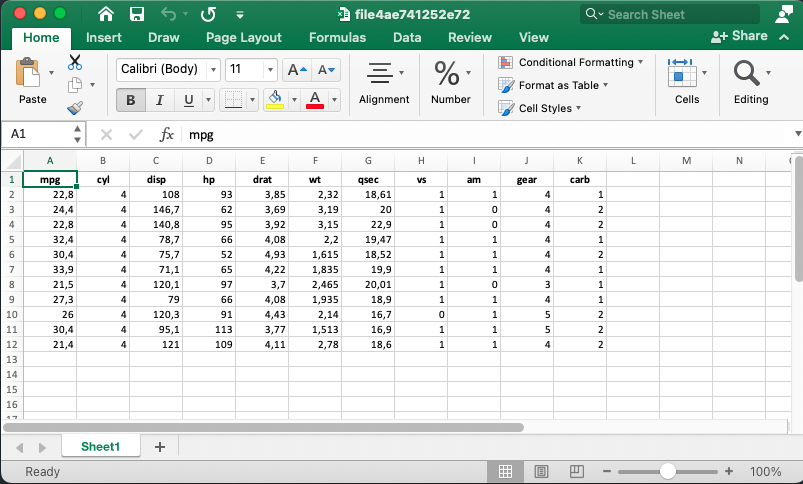

#> Input de um csv sujo
dados <-
'Data; Valor (R$/m2)
"01-maio-2020";22,3
"01-junho-2020";21,5
"06-julho-2021";X
"07-novembro-2022";22'
#> Lendo o arquivo
df <- read_delim(
#> Substitua esta linha pelo 'path' até o csv
I(dados),
delim = ";",
#> Usa , como separador decimal; lê meses em português (e.g. maio, junho, etc.)
locale = locale(decimal_mark = ",", date_names = "pt", date_format = "%d-%B-%Y"),
#> Interpreta X como valores ausentes (NA)
na = "X",
#> Renomeia as colunas
name_repair = janitor::clean_names
)O problema
Uma das minhas maiores dificuldades quando comecei a mexer com R era conseguir importar a minha base de dados. Em geral, eu tinha um ou vários arquivos .csv ou planilhas .xlsx que precisavam ser importador para o R. Eu tinha três dificuldades
- Saber qual a função que eu precisava usar.
- Escrever o caminho até o arquivo específico (qualquer errinho e já não funcionava!).
- Calibrar os argumentos na hora de importar.
Depois de muito esforço eu conseguia importar os dados, mas logo surgia ourto problema: o nome das variáveis vinha num formato muito ruim para trabalhar. No R, idealmente as variáveis são todas:
- Minúsculas
- Não tem acento nem caracteres especiais como
$,%, etc. - Não tem espaços
- Não começa com números
Isso evita inúmeros problemas e facilita muito na hora de escrever o código.
Por fim, eu tinha bastante dificuldade de “enxergar os dados” mesmo depois de ter importado eles. No caso de uma planilha de Excel eu poderia simplesmente abrir ela e explorar um pouco. Já se a base de dados fosse em formato dta ou sav isso já não era tão simples, pois eu não tinha Stata e nem SPSS no meu computador.
Tudo isso me desanimava quando comecei a mexer com R e vejo que isso é um daqueles obstáculos idiotas que acabam segurando muita gente de fazer a transição para o R. É o tipo de problema (que parece) simples, mas que na verdade é difícil de resolver e que faz com que você se sinta burro e fique frustrado.
Neste post vou te dar algumas dicas de como lidar com todos estes passos. É o post que eu gostaria de poder enviar para mim mesmo no passado.
A solução simples
O roteiro de como melhorar a sua vida no R:
- Importar usando
rio::import() - Escrever paths relativos usando
here::here() - Corrigir os nomes das colunas usando
janitor::clean_names() - Visualizar usando
View(),dplyr::glimpse(),skimr::skim()oushow_in_excel()(ver abaixo) - Exportar usando
rio::export()
Agora, vamos aos detalhes.
Importando arquivos
Lembrando os problemas de importar arquivos:
- Saber qual a função usar.
- Escrever o caminho até o arquivo específico (qualquer errinho dá erro!).
- Calibrar os argumentos na hora de importar.
- Às vezes é preciso importar vários arquivos de uma mesma pasta e juntá-los todos num único objeto.
Este problema era tão chato de se resolver que eu acabava dependendo de uma facilidade do RStudio, que ajuda a importar uma base de dados, o botão Import Dataset. Eu fazia os comandos clicando e depois copiava o comando que aparecia no console no meu código.
Isto não era uma solução prática e eu queria a solução “correta”: queria escrever o código certo para importar os dados.
A solução para os problemas acima:
- Aprender todas as funções para importar arquivos (leva tempo…)
- Escrever paths relativos e usar a tecla
tabdentro do RStudio (funciona com autocomplete!) - Aprender todas os argumentos das funções para importar arquivos (mais tempo ainda…).
- Ver abaixo
Ainda que no longo prazo acho que seja importante saber todas as funções, o propósito aqui é te ajudar um pouco então vamos com duas soluções.
A solução correta
A tabela abaixo resume as principais funções que você provavelmente vai ter que usar.
| Formato | Extensao | Importar | Exportar |
|---|---|---|---|
| Excel | xls, xlsx |
readxl::read_excel() |
xlsx::write.xlsx() |
| Separados | csv, tsv, psv, csvy |
data.table::fread() ou readr |
data.table::fwrite() ou readr |
| Stata | dta |
haven::read_dta() |
haven::write_dta() |
| SPSS | sav |
haven::read_sav() |
haven::write_sav() |
| Shapefiles | shp, geosjon, gpkg, etc. |
sf::st_read() |
sf::st_write() |
OBS: Caso não esteja familiarizado com esta sintaxe, aqui readxl é o nome do pacote, read_excel() é a funcão e o :: indica que eu quero a função read_excel do pacote readxl. Em geral, é comum omitir a parte do nomepacote:: porque acaba sendo desnecessário (exceto no caso de conflitos de funções que têm o mesmo nome).
Sobre csvs
Vale uma nota: existem várias alternativas para importar arquivos csv, várias alternativas mesmo. Eu recomendo evitar as funções base e usar as funções equivalentes do readr. Então, por exemplo, ao invés de usar read.csv use readr::read_csv. Esta é uma boa decisão por três motivos:
- As funções do
readrsão consideravelmente mais rápidas e versáteis do que as funções base equivalentes. - As funções
read_*compartilham uma sintaxe padronizada e costumam ter argumentos muito similares. Assim as funções doreadrsão muito parecidas com as funções do pacotereadxlehaven. O comboreadr+readxl+havenresolve o problema em 95% dos casos. - Todos estes pacotes e funções já estão bem integrados ao universo tidyverse1.
Se velocidade começar a ser um problema, pode-se experimentar também com o pacote vroom que permite importar arquivos csv mais rapidamente. A função vroom::vroom também compartilha da sintaxe das funções read_*.
Um típico problema com arquivos csv é que os delimitadores e separadores variam de país para país. Arquivos csv de fontes brasileiras costumam ser separadas por ; e usam a , como quebra de decimal, ao contrário dos csv de fontes dos EUA que usam a , como separador e . como quebra de decimal. Os arquivos no padrão EUA devem ser lidos com read_csv enquanto os arquivos no padrão brasileiro devem ser lidos com read_csv22.
Apesar de todas as vantagens listadas acima, ainda vale recomendar o data.table::fread()3 na hora de importar qualquer arquivo “separado” (csv, tsv, psv, etc.). Esta função é extremamente rápida, aloca os dados na memória de maneira eficiente e simplesmente funciona. Mesmo sem nenhum argumento adicional ela é muito boa na hora de adivinhar o tipo de separador utilizado e o tipo de dado em cada coluna.
Por fim, apesar de ter recomendado o data.table::fwrite na tabela acima, vale notar que funções como readr::write_excel_csv2() podem ser muito úteis caso seu objetivo seja exportar um csv que vai ser consumido por um usuário brasileiro numa planilha de Excel.
Mais controle
A prática faz a perfeição na hora de importar arquivos problemáticos. Como comentei acima, uma das vantagens de se ater ao combo readr + readxl + haven é que os argumentos adicionais destas funções seguem o mesmo padrão.
skip = k: Pula as primeiras k linhas.na: Define quais valores devem ser interpretados como valores ausentes.col_types: Permite que se declare explicitamente qual o tipo de dado (numérico, data, texto) que está armazenado em cada coluna.col_namesouname_repair: O primeiro permite que se declare explicitamente o nome que cada coluna vai ter dentro doRenquanto o segundo permite que se use uma função que renomeia as colunas.locale: Permite selecionar diferentes tipos de padrão de local. Em geral, usa-selocale = locale("pt").range: Este argumento só vale no caso de planilhas de Excel e permite que se importe uma seleção específica da planilha (e.g. “D4:H115”)
O código abaixo mostra como importar um csv bastante sujo. Veremos detalhes sobre a função janitor::clean_names mais adiante.
Importando arquivos: o atalho
Uma função muito prática que inicialmente contorna todos estes problemas é a rio::import().
A função rio::import() simplesmente importa seus dados e funciona com boa parte das extensões mais populares. Na prática, ela é uma função “facilitadora”. Por baixo dos panos, ela está chamando a função correta para o caso específico.
Este site mostra exatamente qual função de qual pacote ele utiliza para importar os dados. A lista é bem completa e inclui bases do Minitab, Matlab, EViews, etc. Spoiler: data.table::fread() é utilizada para importar arquivos csv, psv e tsv.
O par da função rio::import é a rio::export e serve justamente para exportar bases de dados do R para o formato desejado.
data <- rio::import("data/meus_dados.dta")
rio::export(mtcars, "data/mtcars.csv")O único problema desta função é quando seus arquivos não estão num formato muito bacana e argumentos adicionais são necessários. É possível fornecer estes argumentos à função, mas é difícil saber quais são os argumentos, já que não se sabe qual função está sendo chamada. Assim, é preciso consultar a documentação (?rio::import) para verificar qual função está sendo utilizada e aí consultar a documentação desta função.
Escrevendo paths relativos com here
Um problema bem sério que eu enfrentava nos meus códigos era escrever o path até os arquivos externos. Primeiro, eu achava muito trabalhoso escrever ele inteiro. Depois, quando eu mandava meu código para outra pessoa, ou quando eu mesmo ia executar o meu código em outro computador, nada funcionava!
O primeiro passo para lidar com isso é trabalhar com projetos do RStudio4. O melhor workflow é sempre começar seu trabalho num projeto novo e deixar todos os arquivos necessários neste mesmo diretório em pastas com nomes simples como data, report, graphics, etc.
O segundo passo é utilizar paths relativos. Paths relativos, ao contrário de paths absolutos, começam no seu diretório da seguinte forma: "data/subpasta/meus_dados.xlsx". A pasta data está dentro da pasta do projeto: isto é indicado implicitamente.
É bem diferente de um path absoluto: /Users/nome_do_usuario/Documentos/meus_projetos/Projeto 1/data/subpasta/meus_dados.xlsx.
Usar paths absolutos no seu código é garantir que a única pessoa que conseguirá reproduzir ele com sucesso será você, e unicamente no computador em que você escreveu ele (isso se você não formatar ele!).
Aqui entra o pacote here, um pacotinho muito simples, centrado em uma única função homônima. A função here funciona de duas maneiras bastante simples
library(here)
library(haven)
meus_dados <- read_dta(here("data/subpasta/minha_base.dta"))
meus_dados <- read_dta(here("data", "subpasta", "minha_base.dta"))A segunda forma de sintaxe é muito útil na hora de criar paths. Isto será muito conveniente depois, quando formos importar vários arquivos de uma mesma pasta.
A seguinte ilustração que serve de capa do projeto do here resume muito bem a sua utilidade.

Existe um mal hábito dissemeniado de incluir uma linha com setwd("insira_seu_diretorio") no início de todo código. Eu garanto que todo tipo de problema imaginável e inimaginável acontece com pessoas que fazem isso.
O here simplesmente funciona e funciona com tudo. Ele é especialmente útil na hora de escrever scripts em RMarkdown e Quarto. O pacote here é talvez o único que esteja presente em todos os meus projetos e em todos os meus códigos.
Outra dica boa para manter seus projetos organizados é de evitar colocar espaços ou caracteres especiais no nome das suas pastas. Em geral, o R consegue lidar bem com isso, mas volta e meia este mau hábito pode gerar problemas desnecessários e inesperados.
Importando todos os arquivos de uma pasta
Este é um problema bastante recorrente e que é fácil de resolver usando here e funções base.
Imagine que você tem vários arquivos .csv numa pasta e os arquivos estão na seguinte estrutura: Dados/inflacao/2012/ e aí cada csv individual é um arquivo mensal (com nomes potencialmente fora de padrão) com os dados de inflação mensal por produto. Algo como 2012_jan.csv, 2012fevereiro.csv, etc.
A estrutura do código para importar tudo isso no R é bastante simples.
library(here)
# Define o diretório
dir <- here("Dados/inflacao/2012")
# Encontra o nome de todos os arquivos com extensão csv nesta pasta
filenames <- list.files(dir, pattern = "\\.csv$")
# Define o path até cada um dos arquivos
pathfiles <- here(dir, filenames)
# Importa todos os csv usando fread
data <- lapply(pathfiles, data.table::fread)
# Opcionalmente, empilha todos os resultados e cria uma coluna que identifica
# de qual o arquivo a observação pertence
names(data) <- basename(pathfiles)
empilhado <- data.table::rbindlist(data, idcol = "nome_arquivo")Uma maneira ainda mais sucinta de escrever o código seria omitindo os objetos intermediários e simplesmente empilhando o resultado final. Note que, para que as bases de dados sejam empilhadas é necessário que o nome e o tipo das colunas seja compatível. Isto pode ser melhor controlado declarando o tipo das colunas na função fread.
# Define o path até cada um dos arquivos
pathfiles <- list.files(
here("Dados/inflacao/2012"),
pattern = "\\.csv$",
full.names = TRUE
)
# Importa todos os csv usando fread
files <- lapply(pathfiles, data.table::fread)
# Empilha todos os resultados
dat <- data.table::rbindlist(files)Corrigindo nomes de variáveis
O nome das colunas da nossa base de dados é muito importante, pois no R acabamos usando elas com muita frequência. Tanto para quem usa data.table como para os adeptos do tidyverse, o nome das colunas, na prática, acaba sendo usando como um objeto dentro das funções, então é importante que esse nome seja fácil de digitar.
Lembrando que, idealmente, os nomes das colunas e também dos objetos que criamos devem ser:
- Minúsculos
- Sem acento e nem caracteres especiais como
$,%, etc. - Sem espaços
- Sem números no começo
Outro ponto, um pouco óbvio, é que há nomes que devemos evitar na hora de nomear nossas colunas como: FALSE, if, TRUE, for, Inf, etc5.
# Bons nomes
nm <- c("inflacao", "pib", "cambio")
nm <- c("inflacao_percentual", "pib_reais_correntes", "cambio_mensal")
# Nomes ruins
nmRuIm <- c("Inflação (%)", "Produto Interno Bruto (R$)", "Câmbio (Mensal)")
nmRuIm <- c("INFLAÇÃO", "PIB", "CÂMBIO (MÊS)")A função janitor::clean_names() segue os princípios elencados acima e pode ser aplicada diretamente num data.frame. O resultado é uma base com nomes “limpos”. Considere o exemplo abaixo de um arquivo csv com nomes muito ruins.
csv <- "
AnoMesDia;Inflação (%);Produto Interno Bruto;DESEMPREGO
2023-01-01;0.055;0.75;0.1132
2023-04-01;0.045;0.50;0.1051
2023-07-01;0.065;0.68;0.1000
2023-10-01;0.050;1.12;0.9512
"
data <- data.table::fread(I(csv))
head(data) AnoMesDia Inflação (%) Produto Interno Bruto DESEMPREGO
1: 2023-01-01 0.055 0.75 0.1132
2: 2023-04-01 0.045 0.50 0.1051
3: 2023-07-01 0.065 0.68 0.1000
4: 2023-10-01 0.050 1.12 0.9512Note que selecionar uma coluna se torna bem inconveniente e somos forçados a cercar o nome com esse apostrophe.
data$`Inflação (%)`[1] 0.055 0.045 0.065 0.050Normalmente, seria necessário usar uma série de funções para, primeiro remover os acentos, depois tirar os parêntesis, depois converter os caracteres para minúsculos e aí substituir os espaços por subscrito.
A função janitor::clean_names faz tudo isso numa única linha de código. Além disso, como o argumento da função é um data.frame, ela pode ser usada diretamente no início do seu pipe
clean_data <- janitor::clean_names(data)
head(clean_data) ano_mes_dia inflacao_percent produto_interno_bruto desemprego
1: 2023-01-01 0.055 0.75 0.1132
2: 2023-04-01 0.045 0.50 0.1051
3: 2023-07-01 0.065 0.68 0.1000
4: 2023-10-01 0.050 1.12 0.9512library(dplyr)
data |>
janitor::clean_names() |>
filter(inflacao_percent < 0.06) ano_mes_dia inflacao_percent produto_interno_bruto desemprego
1: 2023-01-01 0.055 0.75 0.1132
2: 2023-04-01 0.045 0.50 0.1051
3: 2023-10-01 0.050 1.12 0.9512Enxergando os dados
Por fim, vamos discutir rapidamente algumas formas de rapidamente olhar seus dados. Aqui, temos várias opções. A maneira mais simples seria usar a função head() que mostra as primeiras dez linhas da base de dados. Se a base não for muito grande, podemos usar a função View(). Quando usada dentro do RStudio funciona quase como um Excel, permite enxergar todas as linhas, ordenar por colunas, etc.
Há pacotes que oferecem soluções simples para enxergar rapidamente uma base de dados. Da mais simples para a mais complexa, temos: dplyr::glimpse(), summarytools::descr() e skmir::skim()
Abaixo mostro a saída dessas três funções na base de dados iris. A primeira saída é bastante simples, mostra a dimensão da base (número de linhas e colunas), o nome e o tipo das colunas, e as primeiras linhas de cada coluna.
dplyr::glimpse(iris)Rows: 150
Columns: 5
$ Sepal.Length <dbl> 5.1, 4.9, 4.7, 4.6, 5.0, 5.4, 4.6, 5.0, 4.4, 4.9, 5.4, 4.…
$ Sepal.Width <dbl> 3.5, 3.0, 3.2, 3.1, 3.6, 3.9, 3.4, 3.4, 2.9, 3.1, 3.7, 3.…
$ Petal.Length <dbl> 1.4, 1.4, 1.3, 1.5, 1.4, 1.7, 1.4, 1.5, 1.4, 1.5, 1.5, 1.…
$ Petal.Width <dbl> 0.2, 0.2, 0.2, 0.2, 0.2, 0.4, 0.3, 0.2, 0.2, 0.1, 0.2, 0.…
$ Species <fct> setosa, setosa, setosa, setosa, setosa, setosa, setosa, s…A função summarytools::descr traz várias estatísticas descritivas (ignorando colunas não-numéricas). Cada um destes valores traz bastante informação, mas sua interpretação depende também de conhecimento técnico. Essencialmente, a saída traz algumas medidas de “tendência central” (média, mediana), dispersão (desvio padrão, MAD, IQR), assimetria e curtose. As últimas duas linhas também informam sobre a presença de observações ausentes.
summarytools::descr(iris)Non-numerical variable(s) ignored: SpeciesDescriptive Statistics
iris
N: 150
Petal.Length Petal.Width Sepal.Length Sepal.Width
----------------- -------------- ------------- -------------- -------------
Mean 3.76 1.20 5.84 3.06
Std.Dev 1.77 0.76 0.83 0.44
Min 1.00 0.10 4.30 2.00
Q1 1.60 0.30 5.10 2.80
Median 4.35 1.30 5.80 3.00
Q3 5.10 1.80 6.40 3.30
Max 6.90 2.50 7.90 4.40
MAD 1.85 1.04 1.04 0.44
IQR 3.50 1.50 1.30 0.50
CV 0.47 0.64 0.14 0.14
Skewness -0.27 -0.10 0.31 0.31
SE.Skewness 0.20 0.20 0.20 0.20
Kurtosis -1.42 -1.36 -0.61 0.14
N.Valid 150.00 150.00 150.00 150.00
Pct.Valid 100.00 100.00 100.00 100.00Por fim, a saída da função skimr::skim é a mais completa e inclui até mini gráficos de histogramas das variáveis numéricas. Vale notar que, diferentemente da descr acima, esta função traz informações também sobre as colunas não numéricas
skimr::skim(iris)| Name | iris |
| Number of rows | 150 |
| Number of columns | 5 |
| _______________________ | |
| Column type frequency: | |
| factor | 1 |
| numeric | 4 |
| ________________________ | |
| Group variables | None |
Variable type: factor
| skim_variable | n_missing | complete_rate | ordered | n_unique | top_counts |
|---|---|---|---|---|---|
| Species | 0 | 1 | FALSE | 3 | set: 50, ver: 50, vir: 50 |
Variable type: numeric
| skim_variable | n_missing | complete_rate | mean | sd | p0 | p25 | p50 | p75 | p100 | hist |
|---|---|---|---|---|---|---|---|---|---|---|
| Sepal.Length | 0 | 1 | 5.84 | 0.83 | 4.3 | 5.1 | 5.80 | 6.4 | 7.9 | ▆▇▇▅▂ |
| Sepal.Width | 0 | 1 | 3.06 | 0.44 | 2.0 | 2.8 | 3.00 | 3.3 | 4.4 | ▁▆▇▂▁ |
| Petal.Length | 0 | 1 | 3.76 | 1.77 | 1.0 | 1.6 | 4.35 | 5.1 | 6.9 | ▇▁▆▇▂ |
| Petal.Width | 0 | 1 | 1.20 | 0.76 | 0.1 | 0.3 | 1.30 | 1.8 | 2.5 | ▇▁▇▅▃ |
Olhando seus dados no Excel
Por fim, vou deixar uma função customizada bem divertida, que permite você rapidamente dar uma espiada nos seus dados no bom e velho Excel. A função abaixo cria um arquivo temporário a partir da sua base de dados no R e abre isso no Excel.
Evidentemente, é preciso ter o Excel instalado para que o código funcione.
show_in_excel <- function(.data) {
if (interactive()) {
tmp <- paste0(tempfile(), ".xlsx")
writexl::write_xlsx(.data, tmp)
browseURL(tmp)
}
.data
}
show_in_excel(mtcars)A figura abaixo mostra o resultado do código

Novamente, como a função aceita um data.frame como argumento é bem fácil de colocá-la no final de um pipe. Esta função é bastante útil quando você precisa rapidamente compartilhar algum resultado ou tabela com alguém.
mtcars |>
filter(cyl > 2) |>
group_by(cyl) |>
summarise(peso_medio = mean(wt)) |>
show_in_excel()Resumo
Concluindo, toda boa análise de dados passa por tarefas de rotina: importar dados, trocar nomes de colunas, remover observações vazias, etc. Por que não facilitar a sua vida e tornar essas tarefas simples?
Pessoalmente, quase todo código que escrevo utiliza here e janitor::clean_names(). Depois de muito sofirmento, aprendi quase todas as funções de importar e exportar, e só depois disso descobri o rio::import que teria me poupado muito estresse. Como comentei acima o rio::import é um atalho simples, mas no longo prazo vale a pena aprender com calma todas as funções read_*.
Uso com frequência o View() no final de um pipe para checar se as coisas estão indo da maneira esperada. E também comecei a criar o hábito de começar a minha exploração de dados com o skim().
No fim, este post mostra como organizar seus arquivos, como importar seus dados e como “dar uma checada” para ver se está tudo certo: nomes e tipos de colunas; e também como fazer ajustes rápidos nos dados.
Footnotes
Para saber mais sobre o tidyverse consulte o meu post sobre A Filosofia do Tidyverse.↩︎
Alternativamente, pode-se usar a função
read_delim, que é mais geral e permite especificar quais símbolos são usados como delimitador e separador de números.↩︎Disclaimer importante: depois de revisar este texto eu já não recomendo tão fortemente o
data.table::freadpor um movito bobo e simples. Atualmente, odata.tabletem uma classe própria para datas chamadaIDate. Esta classe é útil se você pretende fazer todas as suas análises usando as funções dodata.tablecomoshift,hour, etc. Contudo, se você pretende usar outros pacotes comuns de séries de tempo será necessário converter paraDatetodas as vezes. Além disso, como eu já estou bastante habituado a usar o pacotelubridatepara manipular datas, não vejo muita vantagem em utilizar as funções dodata.table.↩︎Evidentemente, projetos não são exclusivos ao RStudio; também é possível trabalhar com um workflow de projeto com VSCode, por exemplo. Para usuários que usam majoritariamente o R, contudo, o RStudio facilita muito a vida.↩︎
Estas palavras são “nomes reservados” dentro do
Re jamais devem ser utilizados na hora de definir um objeto ou o nome de uma coluna. Para consultar a lista de nomes reservados, vejahelp("Reserved").↩︎